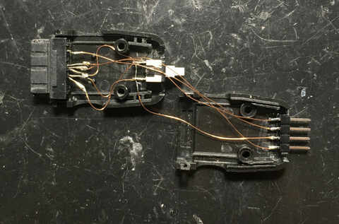
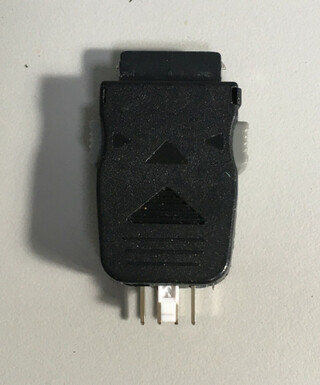
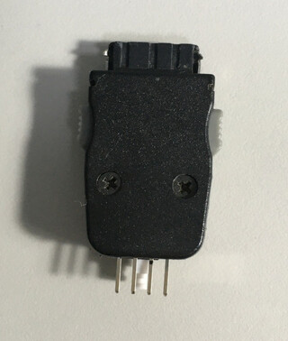
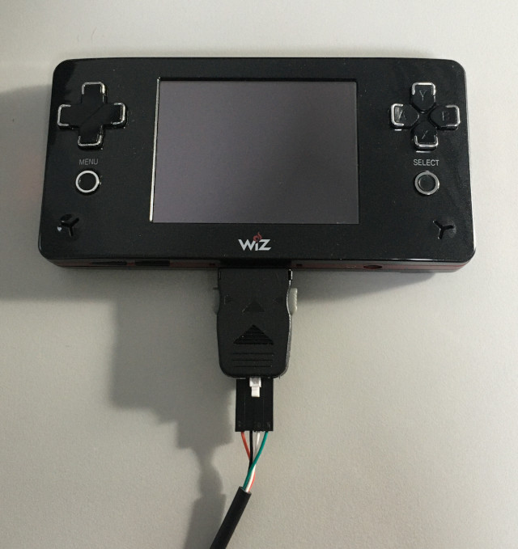

Steward
分享是一種喜悅、更是一種幸福
掌機 - GP2X Wiz - Assembly - 開發環境
司徒目前使用GNU GCC編譯環境，安裝方式如下：
$ sudo apt-get install gcc-arm-none-eabi-*
Wiz掌機的開機模式支援UART開機，也就是可以從UART載入程式執行(16KB)，不過，需要將I/O Port第8腳位和第8腳位接地，因此，使用者還需要焊接一條開發測試線




司徒寫了一個簡單的Python程式，透過UART載入程式到Wiz掌機執行，UART開機僅支援19200bps
#!/usr/bin/python
import os
import sys
import serial
DEF_FILE = 'main.bin'
DEF_PORT = '/dev/ttyUSB0'
if os.geteuid() != 0:
print 'run me as root'
sys.exit()
if os.path.exists(DEF_FILE) == False:
print 'failed to open {}'.format(DEF_FILE)
sys.exit()
print 'uploading...'
ser = serial.Serial(DEF_PORT, 19200)
ser.flush()
f = open(DEF_FILE, 'rb')
ser.write(f.read())
f.close()
ser.close()
print 'upload complete'